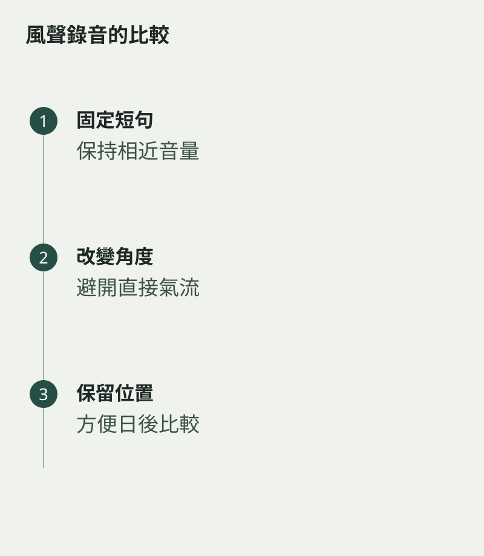

在房間裏聽笛聲很清楚，手機錄下來卻多了一層呼呼聲。錄音中的風聲可能來自氣流直接吹向收音位置。先改變角度和距離，往往比立刻改嘴形或購買器材更值得嘗試。
用同一小段旋律做測試，保持吹奏音量相近。每次只移動一個條件，否則錄音差異可能只是你第二次吹得更大聲，未必真是位置改善。
避開氣流正前方
把手機移到不會直接接到吹口氣流的位置，再錄十幾秒。具體距離要看房間與裝置反應，不必照抄一個固定數字。先聽有沒有爆音、風聲，然後才比較音色是否自然。
如果錄音太遠，只剩房間回響，也不一定更好。可以在幾個位置之間比較，找出聲音清楚而不刺耳的一處。讓手機穩定放好，不要邊拿邊移，免得摩擦聲混入。

用同一位置追蹤練習
選好位置後，平日練習盡量沿用，讓前後錄音較容易比較。記下房間、距離的大概情況及是否開窗；背景噪音很多時，先換一個時段，比後期大幅處理聲音更直接。
回聽時把器材問題和演奏問題分開。若只有某個位置有風聲，先處理位置；若不同位置都聽到相同的粗硬音頭，再回到吹奏本身。錄音是一面鏡子，也有自己的光線，懂得擺放，才看得更清楚。